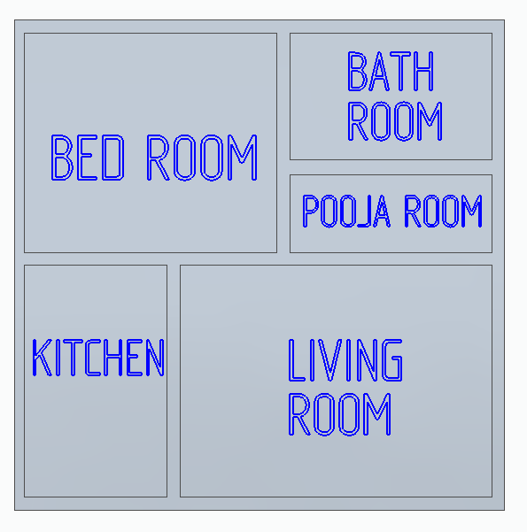
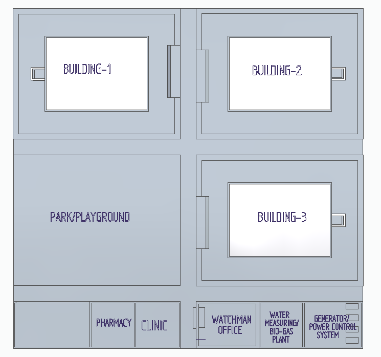

CONSTRUCTION TECHNIQUES:
⦁ Usage of Capsule houses(*)
⦁ Usage of Recycled Concrete(*)
⦁ Restricting the building height up to G+3(ground floor+ three floors) because it reduces the cost of
construction(*)
⦁ Compromising in the quality(not suggestible for large scale)
⦁ Using of modern construction techniques like containment reinforcement system
⦁ Constructing of slope / Inverted V shaped slabs to the house .
⦁ Using tiled roofs .
TECHNIQUES FOR SELF-SUSTAINABILITY:
⦁ Basic Kitchen garden
⦁ Water harvesting systems
⦁ Using of Bio-Gas
⦁ Waste management
House Blue-Print

Project Plan
